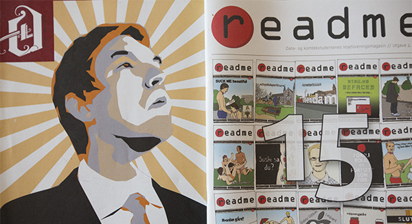

Offline vinner tre priser
Artikkelen er gjengitt med tillatelse fra leder i proKom (2013/2014)
Gullblekka består av fem priser bestemt av en ekstern jury og én pris, Gullblokka, der vinneren stemmes frem av redaksjonene.
– Jeg er veldig positivt overrasket over engasjementet til linjeredaksjonene. Det var utrolig mange som møtte opp, selv om dette er første gang det arrangeres, sier Kari Skjold, redaktør for Offline.
Prisras for Offline
Vår egen redaktør vant prisen for årets artikkel for hennes artikkel “Offline utforsker CERN”.
– Det kom som en overraskelse å vinne, og jeg hadde dermed ikke forberedt noen tale – så jeg dreit meg litt ut på scenen da jeg skulle takke, ler Kari.
Ingrid W. Myrann vant prisen for årets morsomste artikkel med “Da varmen ble borte” og Hallvard J. Christensen vant prisen for årets illustrasjon for illustrasjonen til artikkelen “Å skar’n si?” Begge artiklene og illustrasjonen finner du i Offline #11.
– Alle medlemmene av Offlines redaksjon har bidratt utrolig mye, og lagt ned mange timer med arbeid for å gjøre Offline til en så bra linjeforeningsavis som den er. Vi er flinke på ulike ting og får dermed en god variasjon i hva som er bra i bladet, sier Kari.
First!
Folkeprisen Gullblokka var det readme som fikk med seg hjem. De fikk totalt 18 poeng, mens Offline kom på en knepen andreplass med 17. poeng.
– Å vinne Gullblokka, spesielt som de første, er en stor ære og glede. Det viser at vi blir lest og satt pris på av de andre linjeforeningene på Gløshaugen. Det er vi veldig stolte av, sier redaktør for readme, Mats Byrkjeland.
Hans første ord da han gikk på scenen og mottok prisen var “first!”
– Jeg vil gratulere readme med Gullblokka. De fortjener det virkelig etter innsatsen de har gjort, spesielt med ny mal og nytt papir. Det ser veldig proft ut, sier Kari.
Forhåpentligvis en tradisjon
Kari snakket etter prisutdelingen med studenter som håper at Gullblekka skal bli en tradisjon.
– Dette er en feiring av alle redaksjonene, ikke bare de som fikk en pris. Det er mye bra på Gløshaugen. Jeg gleder meg til neste år, sier Kari.
Bilder fra kvelden kan du se på facebook.com/gullblekka.